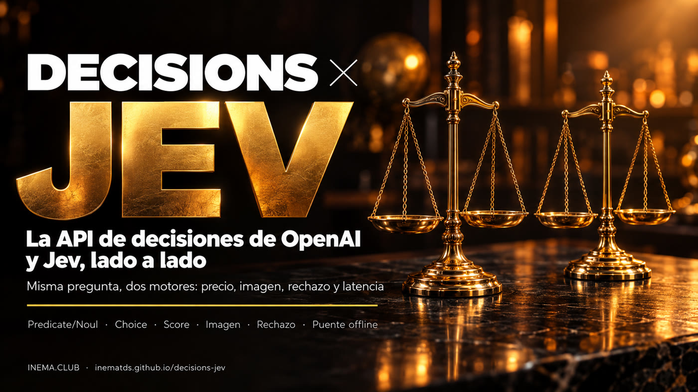

La misma pregunta, dos motores. Mira qué cambia en tipos de pregunta, imagen, rechazo, precio y latencia — y convierte tus solicitudes de un formato a otro sin reescribir nada.

OpenAI lanzó la Decisions API: envías un texto o una foto con preguntas cerradas y recibes solo la respuesta — sí/no, una opción de tu lista o una nota — con la probabilidad, sin texto corrido. Es la misma idea de Jev, el modelo de decisión que INEMA ya estudia. Este proyecto explica las diferencias con la fuente de cada dato y trae un puente en Python que convierte las preguntas de un formato a otro y compara las respuestas. Para estudiar basta con leer y ejecutar la demostración sin conexión; para llamar a las APIs de verdad, necesitas tus propias claves.
Un modelo de decisión no escribe: elige. Tu sistema hace la pregunta, define las opciones válidas y recibe una respuesta lista para usar en código — y una probabilidad para saber cuándo llamar a una persona.
Cada línea indica de dónde viene: documentación oficial de OpenAI, el código del proyecto Jev o lo que midieron los autores de dos videos. Nada se presenta como medición nuestra.
Convierte la solicitud de un formato a otro (noul ↔ predicate, criteria ↔ choices/levels) y normaliza las dos respuestas en un solo formato.
Tres casos ficticios con respuestas simuladas se ejecutan sin clave ni costo; 12 pruebas garantizan la conversión. El modo en vivo solo se ejecuta cuando tú lo autorizas.
Ambos responden a las mismas tres formas de preguntar. Las diferencias están en la entrada, el rechazo y el precio.
| OpenAI Decisions API | Jev (TypeSafe) | Microsoft-Decision-1 | |
|---|---|---|---|
| Sí o no | predicate → probabilidad de 0 a 1 | noul → probabilidad de 0 a 1 | sí/no → probabilidad calibrada |
| Una opción de la lista | choice + choices, con confidence | choice + criteria, con confidence | opción múltiple → probabilidad de cada opción |
| Nota en una escala | score + levels (índice desde 0) | score + criteria en lista | nota y rúbrica (evalúa respuestas y acciones de agentes) |
| Entrada | Texto e imagen (solo base64) | Solo texto | Solo texto (hasta 32.768 tokens) |
| Rechazo | Puede responder refusal | Siempre elige entre las opciones | No informado |
| Modelo | gpt-6-luna (único) | ~typesafe/jev-latest | Qwen3.5-9B post-entrenado por Microsoft |
| Precio (entrada) | US$ 0,10 por 1M de tokens, sin cobro de salida | US$ 0,042 por 1M de tokens | US$ 0,042 por 1M de tokens, salida gratis |
| Situación | Beta pública desde 06/10/2026 | Disponible, sin lista de espera | Microsoft Foundry desde el 09/10/2026; OpenRouter "pronto" |
Fuentes: guía oficial de OpenAI (developers.openai.com/api/docs/guides/decisions), el proyecto inematds/jev y el anuncio de Microsoft-Decision-1 (09/10/2026, Microsoft Foundry). Detalles en docs/comparacao.md (en portugués).
Dos creadores probaron las APIs justo en el lanzamiento. Los números de abajo son suyos, con pocas preguntas y fáciles — sirven como indicio, no como benchmark.
Jev salió cerca de un 58% más barato por token de entrada; en la prueba de incidentes, el costo total quedó cerca de la mitad.
Promedio de 146 ms (OpenAI) contra 155 ms (Jev); la mediana fue levemente mejor en Jev. En una prueba de integración, una llamada tardó ~300 ms, el doble de lo anunciado.
Empate: los dos acertaron todo en las pruebas de los autores. Con fotos, OpenAI distinguió producto dañado, intacto y caja cerrada.
Fuentes: video "OpenAI's Decisions API just dropped. Here's how it compares to Jev" y un segundo video, en español, que integró la API en un triaje de clínica veterinaria (recibido solo como transcripción).
El puente traduce las preguntas, llama a cada proveedor en su formato y devuelve las respuestas lado a lado, con alerta de revisión cuando la confianza es baja o hubo rechazo.
El puente usa solo la biblioteca estándar de Python. Las claves solo son necesarias en el modo en vivo.
No hay dependencias que instalar.
git clone https://github.com/inematds/decisions-jev.git cd decisions-jev
Solo para el modo en vivo. Se crea en la plataforma de OpenAI; se cobra aparte de cualquier suscripción.
export OPENAI_API_KEY=...Solo para el modo en vivo, para llamar a Jev a través de OpenRouter.
export OPENROUTER_API_KEY=...Empieza sin conexión. Llama a las APIs solo cuando la pregunta esté bien formulada.
Tres casos ficticios — guardia de mascotas, incidente de checkout y un rechazo — con respuestas simuladas. Muestra el formato de la comparación, sin clave y sin costo.
python3 -m ponte demo
El puente transforma noul en predicate, criteria en choices o levels, y el nombre de cada pregunta en name.
python3 -m ponte converter jev-openai exemplos/plantao-pet.jev.json
La imagen se convierte en una data URL base64 dentro del mensaje. En el sentido contrario, el puente avisa que Jev recibirá solo el texto.
python3 -m ponte converter jev-openai exemplos/plantao-pet.jev.json --imagem foto.jpg python3 -m ponte converter openai-jev exemplos/devolucao-foto.openai.json # avisa: 1 imagen descartada
Llama a los dos proveedores con la misma pregunta y muestra respuestas, latencia y costo. Exige PERMITIR_API=1 para no gastar por error. Este modo aún no ha sido ejecutado por INEMA.
PERMITIR_API=1 python3 -m ponte ao-vivo exemplos/plantao-pet.jev.json
El prompt listo le indica al agente que lea la documentación oficial en Markdown antes de programar, que haga las preguntas en una sola llamada, que marque la confianza inferior a 0,6 como "revisar" y que trate el rechazo sin romperse.
# copia el bloque de texto de
docs/prompt-integracao.md
12 pruebas cubren conversión en los dos sentidos, ida y vuelta, imagen, rechazo, revisión y el bloqueo del modo en vivo.
python3 -m unittest discover -s testes
Para una persona que espera, unos milisegundos no hacen diferencia. Pesan la entrada, el volumen y qué hacer con la duda.
Decisions API. La foto de un producto, de una herida o una captura de pantalla entran en la misma llamada. Jev todavía solo lee texto.
Jev. El precio de entrada es menos de la mitad; en millones de registros, la diferencia se nota en la cuenta.
OpenAI puede rechazar con refusal. En Jev, incluye una opción "insuficiente". En ambos, un rechazo o una confianza baja va a una persona.
Lo que ya existe y lo que falta medir.